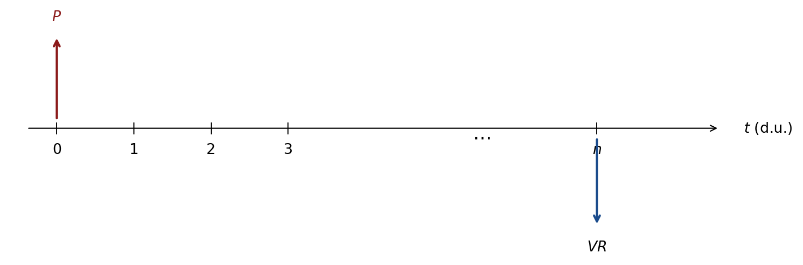
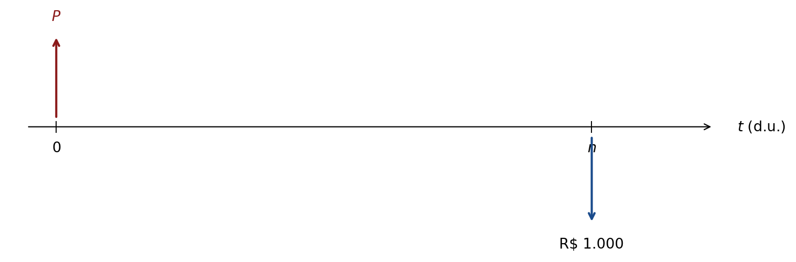

8 Títulos Públicos
8.1 Motivação: Como o Governo se Financia
Os governos financiam seus déficits primordialmente de duas formas: impostos (receita compulsória) e dívida pública (emissão de títulos vendidos ao mercado).
Dados Brasil 2024
| Indicador | Valor | Referência |
|---|---|---|
| Estoque da dívida (DPF) | \(\approx\) R$ 7 trilhões | Tesouro Nacional, dez/2024 |
| Custo médio | \(\approx\) 11% a.a. | |
| PIB | \(\approx\) R$ 11,7 trilhões | IBGE, 2024 |
| Composição por indexador: | ||
| Pós-fixados (SELIC) | \(\approx\) 46,3% | |
| Pré-fixados | \(\approx\) 22% | |
| IPCA+ | \(\approx\) 27% | |
| Composição por detentor: | ||
| Instituições Financeiras | \(\approx\) 30% | |
| Fundos de Investimento | \(\approx\) 22% | |
| Previdência | \(\approx\) 24% | |
| Estrangeiros | \(\approx\) 10% |
8.2 Tesouro Direto — Visão Geral
O Tesouro Direto é o programa do governo federal para venda de títulos públicos diretamente ao investidor pessoa física, criado em 2002.
Requisitos: CPF e conta em uma corretora habilitada pelo Tesouro Nacional. Negociação disponível nos dias úteis das 9h30 às 18h, com liquidez diária.
Liquidação: compra a partir das 18h do dia útil posterior; resgate até 13h → mesmo D.U.; entre 13h–18h → D.U. seguinte.
Imposto de renda:
| Prazo da aplicação | Alíquota IR |
|---|---|
| Até 180 dias | 22,5% |
| 181 a 360 dias | 20,0% |
| 361 a 720 dias | 17,5% |
| Acima de 720 dias | 15,0% |
NoteNota
Para resgates em menos de 30 dias, há incidência adicional de IOF, regressivo de 96% a 0% do rendimento.
Títulos disponíveis:
| Título | Indexador | Cupom | Vencimento típico |
|---|---|---|---|
| LTN (Tesouro Prefixado) | Pré | Não | 1–5 anos |
| NTN-F (Tesouro Prefixado c/ juros) | Pré | Semestral | 5–15 anos |
| LFT (Tesouro Selic) | SELIC | Não | 1–6 anos |
| NTN-B Principal (Tesouro IPCA+) | IPCA | Não | 5–35 anos |
| NTN-B (Tesouro IPCA+ c/ juros) | IPCA | Semestral | 5–40 anos |
| EDUCA+ (NTN-B1) | IPCA | Não (acumula) | 20 anos |
| RENDA+ (NTN-B2) | IPCA | Mensal (renda) | 30–40 anos |
Negociação mínima: \(0{,}01\%\) do valor de face (ou um título). Máximo: R$ 1 milhão por mês por pessoa.
8.3 Tesouro Selic (LFT)
A LFT (Letra Financeira do Tesouro) é o título pós-fixado referenciado na taxa SELIC acumulada. O investidor compra hoje por \(P\) e recebe o valor de resgate \(VR\) na data de vencimento:
\[VR = P_0\,(1 + \bar{i}_{\text{SELIC}})^{n/252},\]
onde \(\bar{i}_{\text{SELIC}}\) é a taxa SELIC acumulada no período (base 252 d.u.).
NoteNota — Ágio e deságio
- Ágio (\(d > 0\)): rentabilidade menor que a SELIC (e.g. SELIC\(-0{,}02\%\)).
- Deságio (\(d < 0\)): rentabilidade maior (e.g. SELIC\(+0{,}02\%\)).
Decomposição: \((1+\bar{i}_m) = (1+d)(1+\bar{i}_{\text{SELIC}})\), portanto \(d = \frac{1+\bar{i}_m}{1+\bar{i}_{\text{SELIC}}} - 1.\)
8.4 LTN (Tesouro Prefixado)
A LTN é um título zero-cupom prefixado: o investidor paga o preço \(P\) hoje e recebe exatamente R$ 1.000 no vencimento. A relação preço–taxa (base 252 d.u.) é:
\[P = \frac{1.000}{(1+\text{YTM})^{n/252}}.\]

8.5 NTN-F (Tesouro Prefixado com Juros Semestrais)
A NTN-F é um título prefixado com cupons semestrais de \(10\%\) a.a. (\(\approx 4{,}881\%\) ao semestre) sobre o valor de face de R$ 1.000, mais devolução do principal no vencimento:
\[P = \sum_{j=1}^{n} \frac{C_j}{(1+\text{YTM})^{j/2}} + \frac{1.000}{(1+\text{YTM})^n},\]
onde \(C_j = 1000 \times 4{,}881\%\) e os expoentes usam semestres.
NoteNota
O cupom semestral de \(10\%\) a.a. equivale a \((1{,}10)^{1/2}-1 \approx 4{,}881\%\) ao semestre. A NTN-F é precificada como um bond clássico (similar ao T-Note americano).
8.6 NTN-B (Tesouro IPCA+)
A NTN-B combina: (1) correção pelo IPCA — protege o poder de compra do principal; (2) taxa de juros real pré-fixada (cupom semestral de \(6\%\) a.a. \(\approx 2{,}956\%\) ao semestre).
Cálculo do VNA (Valor Nominal Atualizado)
\[\text{VNA} = 1.000 \times \frac{\text{IPCA}_{\text{hoje}}}{\text{IPCA}_{\text{base}}} = \text{VNA}_{t-1} \times (1 + \text{IPCA}_{\text{acum. no mês}}).\]
Cotação e Preço
\[\text{Cotação} = \frac{100}{(1+\text{taxa})^{d_u/252}}, \qquad \text{Preço} = \text{VNA}_{\text{projetado}} \times \text{Cotação}.\]
Para a NTN-B com cupons semestrais:
\[P = \text{VNA} \times \left[\sum_{k=1}^{n} \frac{c}{(1+\text{taxa})^{d_{u,k}/252}} + \frac{100}{(1+\text{taxa})^{d_{u,n}/252}}\right],\]
onde \(c = 100 \times[(1{,}06)^{1/2}-1] \approx 2{,}9563\) é o cupom percentual semestral.
NoteNota
A NTN-B + Principal é idêntica à NTN-B, mas sem cupons: o investidor recebe tudo no vencimento (VNA final + juros acumulados). Ideal para acumulação de longo prazo.
TipExemplo moderno — NTN-B: precificação em 2025
Título: NTN-B com vencimento em 15/08/2035 (\(n \approx 10\) anos = 20 semestres).
- VNA (15/01/2025): R$ 4.587,40.
- Taxa de mercado (ANBIMA): \(6{,}28\%\) a.a. real.
- Cupom: \(6\%\) a.a. \(\Rightarrow\) \(2{,}9563\%\) por semestre.
\[\text{Cotação} = \sum_{k=1}^{20} \frac{2{,}9563}{(1{,}0628)^{k/2}} + \frac{100}{(1{,}0628)^{10}} \approx 97{,}23.\]
\[P = 4.587{,}40 \times \frac{97{,}23}{100} \approx \textbf{R\$ 4.460,00.}\]
Comprar a R$ 4.460 hoje garante o IPCA mais \(6{,}28\%\) reais ao ano até 2035 — proteção contra inflação com rentabilidade real positiva.
8.7 Yield to Maturity (YTM) e YTM Modificada
TipDefinição
O Yield to Maturity (YTM) de um título é a TIR do fluxo de caixa do investimento — a taxa que iguala o preço pago ao valor presente de todos os fluxos futuros:
\[P = \sum_{t=1}^{n}\frac{C_t}{(1+\text{YTM})^t} + \frac{M}{(1+\text{YTM})^n}.\]
Para a NTN-F (bond clássico com cupom \(R\) e valor de face \(M = 1.000\)):
\[P = R\left[\frac{(1+\text{YTM})^n-1}{\text{YTM}}\right]\frac{1}{(1+\text{YTM})^n} + \frac{1.000}{(1+\text{YTM})^n}.\]
A YTM modificada considera o reinvestimento dos cupons à taxa de mercado \(i\):
\[P\,(1+\text{YTM}_m)^n = R\left[\frac{(1+i)^n-1}{i}\right] + 1.000.\]
NoteNota
A YTM modificada é menor que a YTM quando a taxa de mercado \(i < \text{YTM}\), pois considera o reinvestimento dos cupons a uma taxa inferior — cenário mais realista para a maioria dos investidores.
8.8 Sensibilidade do Preço à Taxa de Juros
Uma propriedade fundamental dos títulos de renda fixa é a relação inversa entre preço e taxa de juros: quando a taxa de mercado sobe, o preço do título cai; quando a taxa cai, o preço sobe. Isso ocorre porque o valor presente dos fluxos futuros diminui quando a taxa de desconto aumenta.
Para a LTN (Letra do Tesouro Nacional), o preço é dado por:
\[P = \frac{1.000}{(1+i)^{du/252}}\]
onde \(du\) é o número de dias úteis até o vencimento. Como o único fluxo é o valor de face no vencimento, qualquer variação na taxa \(i\) afeta diretamente o preço.
TipExemplo — Sensibilidade da LTN
Considere uma LTN com \(du \approx 126\) dias úteis (~6 meses). A tabela abaixo mostra o preço para diferentes taxas de mercado:
| Taxa \(i\) (a.a.) | Preço \(P\) (R$) |
|---|---|
| 13% | 944,91 |
| 14% | 936,59 |
| 15% | 933,50 |
| 16% | 928,48 |
| 17% | 924,50 |
Observe que um aumento de 4 p.p. na taxa (de 13% para 17%) reduz o preço em aproximadamente R$ 20 — uma queda de ~2,2%.
ImportantImplicação para o investidor
Quem compra uma LTN e precisa vendê-la antes do vencimento fica exposto ao risco de mercado: se as taxas subirem, o preço de venda será inferior ao preço de compra. Quem carrega o título até o vencimento recebe exatamente a taxa contratada.
8.9 Duration de Macaulay
A Duration de Macaulay (\(D\)) mede o prazo médio ponderado dos fluxos de caixa de um título, usando como pesos os valores presentes de cada fluxo. É uma medida de sensibilidade do preço à variação na taxa de juros.
\[D = \frac{\displaystyle\sum_{t=1}^{n} t \cdot \frac{C_t}{(1+r)^t}}{\displaystyle\sum_{t=1}^{n} \frac{C_t}{(1+r)^t}} = \frac{\displaystyle\sum_{t=1}^{n} t \cdot VP_t}{P}\]
onde \(C_t\) são os fluxos de caixa (cupons e valor de face), \(r\) é a taxa de juros e \(P\) é o preço atual do título.
TipExemplo — Duration de uma NTN-F
Título com cupom \(C = 5\%\) ao ano, valor de face \(VF = 1.000\), prazo \(n = 5\) anos e taxa de mercado \(i = 7\%\) a.a.
| Ano \(t\) | Fluxo \(C_t\) | \(VP_t = C_t/(1{,}07)^t\) | \(t \cdot VP_t\) |
|---|---|---|---|
| 1 | 50 | 46,73 | 46,73 |
| 2 | 50 | 43,67 | 87,34 |
| 3 | 50 | 40,81 | 122,43 |
| 4 | 50 | 38,14 | 152,56 |
| 5 | 1.050 | 748,85 | 3.744,25 |
| Total | 918,20 | 4.153,31 |
\[D = \frac{4.153{,}31}{918{,}20} \approx \mathbf{4{,}52 \text{ anos}}\]
O título tem Duration de 4,52 anos, inferior ao prazo de vencimento de 5 anos — porque parte do valor é recebida antecipadamente via cupons.
NoteInterpretação
Para um título zero-cupom (sem pagamentos intermediários), a Duration é exatamente igual ao prazo de vencimento, pois todo o fluxo está concentrado no final. Para títulos com cupom, \(D < n\) sempre.
8.10 Duration Modificada
A Duration Modificada (\(DM\)) é a Duration de Macaulay ajustada pela taxa de juros, e fornece diretamente a sensibilidade percentual do preço a uma variação na taxa:
\[DM = \frac{D}{1 + ytm/n}\]
onde \(ytm\) é o yield to maturity e \(n\) é o número de pagamentos por ano (1 para pagamentos anuais).
A interpretação é direta: uma variação de \(\Delta i\) na taxa de juros provoca uma variação aproximada no preço de:
\[\frac{\Delta P}{P} \approx -DM \cdot \Delta i\]
TipExemplo — Duration Modificada
Usando o exemplo anterior (\(D = 4{,}52\) anos, \(ytm = 7\%\) a.a., pagamentos anuais):
\[DM = \frac{4{,}52}{1{,}07} \approx \mathbf{4{,}22}\]
Se a taxa de juros subir 1 p.p. (de 7% para 8%), o preço do título cai aproximadamente:
\[\frac{\Delta P}{P} \approx -4{,}22 \times 0{,}01 = -4{,}22\%\]
Um aumento de 1 p.p. na taxa implica queda de ~4,2% no preço — quanto maior a Duration Modificada, mais sensível o título é às variações de juros.
ImportantUso prático
A Duration Modificada é amplamente utilizada na gestão de risco de carteiras de renda fixa (bond portfolio management). Um gestor que espera queda de juros prefere títulos com maior DM (maior potencial de ganho de capital); quem teme alta de juros prefere títulos com menor DM (menor risco de desvalorização).
8.11 Tesouro EDUCA+ — Planejamento Educacional
O Tesouro EDUCA+ (anteriormente chamado de Tesouro RENDA+) é um título do Tesouro Direto desenhado para o planejamento de gastos futuros, como a educação superior de um filho. O investidor acumula recursos durante uma fase de aportes e, ao final, passa a receber uma renda mensal por um período definido.
O problema de planejamento tem duas etapas:
Etapa 1 — Fase de Acúmulo: durante \(n_1\) anos, realiza-se aportes mensais \(R\) a uma taxa real \(i_{am}\). O valor acumulado ao final deve ser suficiente para financiar a fase de retirada.
Etapa 2 — Fase de Retirada: durante \(n_2\) anos, recebe-se uma renda mensal \(R_f\) (em termos reais). O Valor Presente dessa renda, calculado no início da fase de retirada, equivale ao montante acumulado na Etapa 1.
A taxa real mensal é obtida a partir da taxa anual \(i\) (IPCA + spread):
\[i_{am} = (1 + i)^{1/12} - 1\]
TipExemplo — Tesouro EDUCA+
Dados:
- Fase de retirada: \(n_2 = 5\) anos (60 meses) com renda mensal \(R_f = \text{R\$}\;8.000\) (em valores reais).
- Fase de acúmulo: \(n_1 = 18\) anos (216 meses) de aportes mensais \(R\).
- Taxa real: \(i = \text{IPCA} + 6\%\) a.a. \(\Rightarrow\) \(i_{am} = (1{,}06)^{1/12} - 1 \approx 0{,}4868\%\) a.m.
Etapa 1 — Valor Presente da fase de retirada (capital necessário ao início das retiradas):
\[VP = R_f \cdot \frac{1 - (1+i_{am})^{-60}}{i_{am}} = 8.000 \cdot \frac{1 - (1{,}004868)^{-60}}{0{,}004868} \approx \text{R\$}\;415.235\]
Etapa 2 — Aporte mensal necessário (para acumular VP em \(n_1 = 18\) anos = 216 meses):
\[R = VP \cdot \frac{i_{am}}{(1+i_{am})^{216} - 1} = 415.235 \cdot \frac{0{,}004868}{(1{,}004868)^{216} - 1} \approx \text{R\$}\;1.083{,}90 \text{ por mês}\]
Interpretação: para garantir uma renda real de R$ 8.000/mês durante 5 anos (cobrindo, por exemplo, os custos universitários de um filho), o investidor precisa aportar aproximadamente R$ 1.084 por mês durante 18 anos no Tesouro EDUCA+, assumindo rentabilidade real de IPCA + 6% a.a.
NoteObs: cálculo em termos reais
Todo o exercício acima é feito em valores reais — o efeito da inflação (IPCA) já está embutido na taxa de desconto. Isso significa que R$ 8.000 representa o poder de compra atual, e o título garante esse valor corrigido pelo IPCA ao longo do tempo.